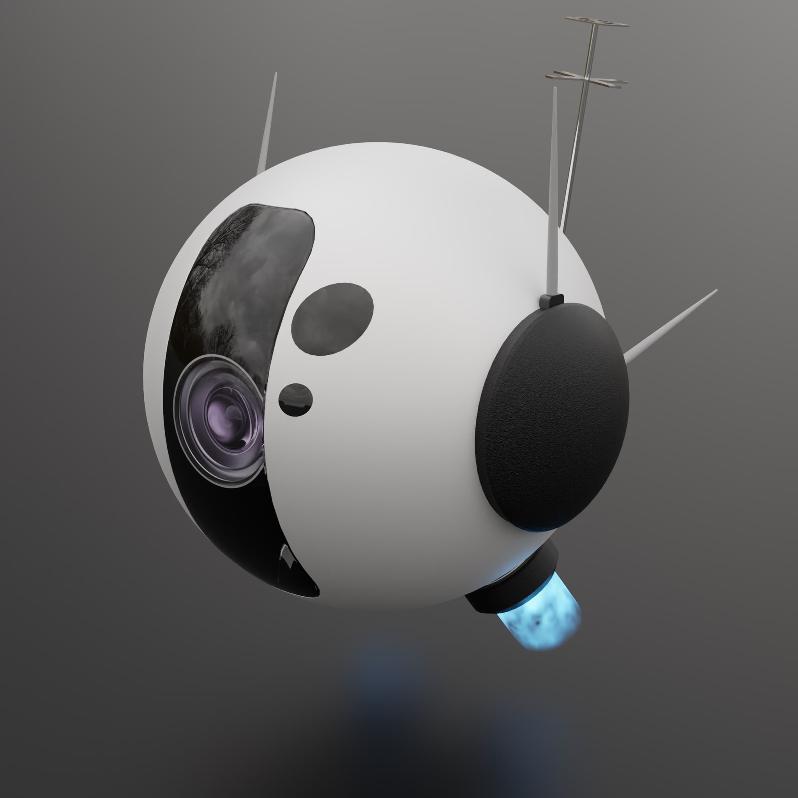
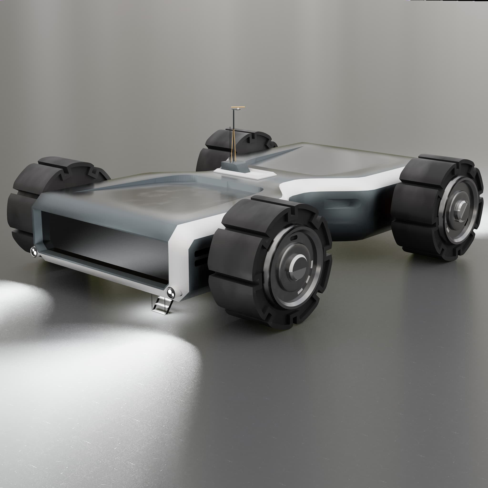
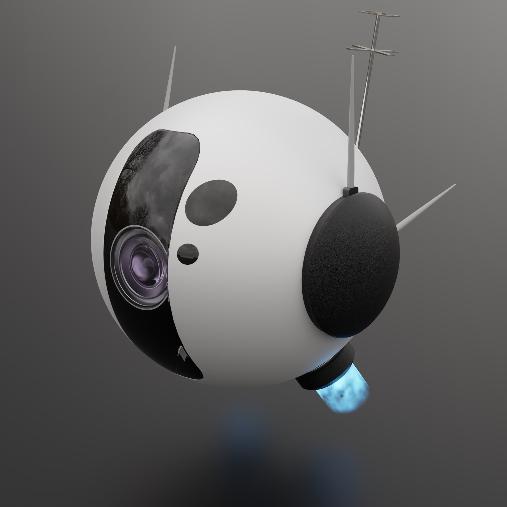
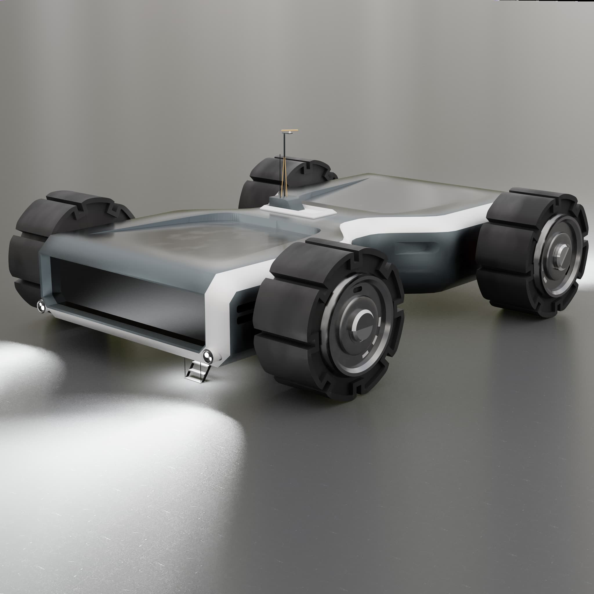

Hello!
Halo!
I'm Ilham, a fellow Indonesian who keeps finding themselves lost in making new things. Primarily a multi-hobbyist of many things and is still growing. But so far I've delved the furthest into:
- 3D
- Illustration
- and various design works
This page purpose is to "compile" most of my work into a remote portfolio. Feel yourself at home!
- 3D
- Illustration
- and various design works
This page purpose is to "compile" most of my work into a remote portfolio. Feel yourself at home!
"Potto" is my online alias.
(THREE)D
::Millions of vertices are extruded, probably.


 



Design and Motion Graphics
::oh no it's 2 pixels off.
Illustration.
::Your hand gotta swing at one point y'know.